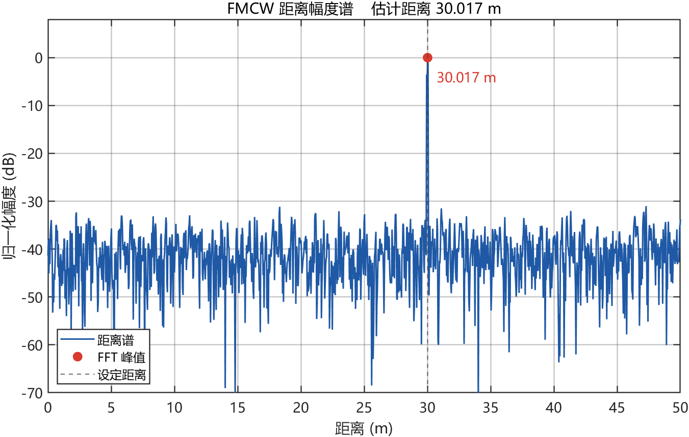
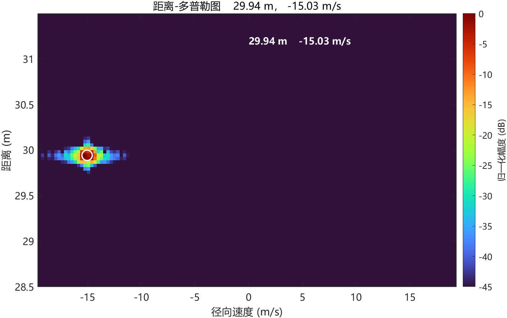
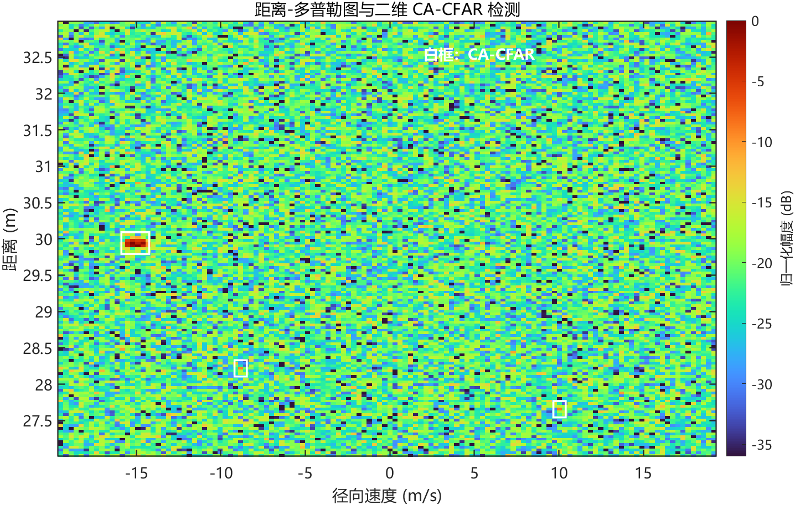

难点一 · 欠采样与距离模糊
发现题目预设的 10MHz 采样率无法覆盖 30m 目标（最大不模糊距离仅约 18.7m），且会导致频谱混叠。通过理论计算将复基带采样率提升至 4GHz，成功解算出真实距离。
PROJECT · 04
基于 MATLAB 构建 77GHz FMCW 雷达算法链路，完成从一维测距、二维测速到 CFAR 目标检测的全流程物理仿真。
01 / OVERVIEW
本系统基于调频连续波（FMCW）体制，在 MATLAB 中构建完整的雷达信号处理算法链路。系统参数设定为载频 77GHz、带宽 4GHz、单 Chirp 扫频周期 50us。通过对中频信号进行快时间（1D FFT）提取距离信息，利用慢时间维度的 2D FFT 提取多普勒速度，最后通过 2D CA-CFAR（单元平均恒虚警率）算法在叠加噪声的环境中实现目标的自动检测与聚类。
02 / ROLE
03 / TECH STACK
仿真平台、核心算法与雷达体制参数。
04 / CHALLENGES
发现题目预设的 10MHz 采样率无法覆盖 30m 目标（最大不模糊距离仅约 18.7m），且会导致频谱混叠。通过理论计算将复基带采样率提升至 4GHz，成功解算出真实距离。
在复杂噪声背景下手写 2D CA-CFAR，设计 2x2 保护单元与 4x4 参考单元，并结合 Pfa=1e-5 动态计算阈值乘数。针对目标主瓣跨越多个像素的问题，实现了基于八连通域的功率加权重心聚类，每个目标只保留一个位置。
05 / RESULTS
一维测距、二维测速与 CFAR 检测的量化结果，以及对应仿真图。


